Foundation Mathematics
1017SCG
Week 10

Topics
- Definition of the Derivative (first principles)
- Tables of Derivatives
- Applications of Derivatives (Turning points, Greatest and Least values, Tangent lines)
Definition of the Derivative (first principles)

Definition of the Derivative (first principles)

Definition of the Derivative (first principles)

What is the gradient of any possible function? 🤔
Definition of the Derivative (first principles)


Definition of the Derivative (first principles)
|
|
Average Gradient $\quad= \dfrac{f(x+h)-f(x)}{h}$ |
Definition of the Derivative (first principles)

|
Average Gradient $\quad= \dfrac{f(x+h)-f(x)}{h}$ Gradient of the curve $=\ds\lim_{h\ra 0} \dfrac{f(x+h)-f(x)}{h}$ |
Definition of the Derivative (first principles)
Gradient of a curve $\,\ra\,$ Slope
We call it the instantaneous rate of change.
The Derivative of the function $y=f(x)$ is given by:
$\dfrac{dy}{dx}=$ $\ds \lim_{h\ra 0} \frac{f(x+h)-f(x)}{h}$
Example 1
Compute the derivative of $y = 3x + 7$ using first principles.
Write $\,f(x)= 3x+ 7 .$ Then
$f(x+h)$ $=3(x+h) + 7$ $=3x + 3h + 7$
Thus
$\dfrac{f(x+h)-f(x)}{h}$ $=\dfrac{(3x+3h+7) -(3x+7)}{h}$ $=\dfrac{3h}{h}$ $=h$
Hence $\;\ds \lim_{h\ra 0}\dfrac{f(x+h)-f(x)}{h}$ $=\ds \lim_{h\ra 0} h$ $=0$
Example 2
Compute the derivative of $y = x^2$ using first principles.
Write $\,f(x)= x^2.$ Then
$f(x+h)$ $=(x+h)^2$ $=x^2 + 2xh + h^2$
Thus
$\;\; \dfrac{f(x+h)-f(x)}{h}$ $=\dfrac{\left(x^2 + 2xh + h^2\right) -\left(x^2\right)}{h}$
$\qquad \qquad \qquad \;\;\;\, =\dfrac{ 2xh + h^2}{h}$ $=\dfrac{ \left(2x + h\right)h}{h}$ $=2x + h$
Example 2
Compute the derivative of $y = x^2$ using first principles.
Write $\,f(x)= x^2.$ Then
👉 $\;\;\dfrac{f(x+h)-f(x)}{h}$ $=2x + h$
Take $\;\ds \lim_{h\ra 0}\dfrac{f(x+h)-f(x)}{h}$ $=\ds \lim_{h\ra 0} 2x + h$ $=2x$

Big question
Can we always compute the derivative of any function $f(x)$ using the formula \[ \ds \lim_{h\ra 0}\frac{f(x+h)-f(x)}{h}? \]


Consider $\;y=x^3$
|
\( \begin{align*} \frac{dy}{dx} &= \lim_{h \to 0} \frac{f(x+h) - f(x)}{h} \qquad\qquad\qquad \end{align*} \) \( \begin{align*} &= \lim_{h \to 0} \frac{(x+h)^3 - x^3}{h} \\ &= \lim_{h \to 0} \frac{x^3 + 3x^2h + 3xh^2 + h^3 - x^3}{h} \\ &= \lim_{h \to 0} \frac{3x^2h + 3xh^2 + h^3}{h} \\ &= \lim_{h \to 0} \left( 3x^2 + 3xh + h^2 \right) \\ &= 3x^2 \end{align*} \) |

|
Now consider $\;y = x^4 - x^3 + 2x^2 - 1$
|
\( \begin{align*} \frac{dy}{dx} &= \lim_{h \to 0} \frac{f(x+h) - f(x)}{h} \qquad \qquad \qquad \qquad \qquad \qquad \qquad \qquad \qquad \end{align*} \) \( \begin{align*} &= \lim_{h \to 0} \frac{(x+h)^4 - (x+h)^3 + 2(x+h)^2 - 1 \;-\; (x^4 - x^3 + 2x^2 - 1)}{h} \\ &= \lim_{h \to 0} \frac{(x^4 + 4x^3h + 6x^2h^2 + 4xh^3 + h^4) - (x^3 + 3x^2h + 3xh^2 + h^3)}{h} \\ &\quad \quad \quad + \frac{(2x^2 + 4xh + 2h^2) - 1 - (x^4 - x^3 + 2x^2 - 1)}{h} \\ &= \lim_{h \to 0} \frac{x^4 + 4x^3h + 6x^2h^2 + 4xh^3 + h^4 - x^3 - 3x^2h - 3xh^2 - h^3}{h} \\ &\quad\quad \quad + \frac{2x^2 + 4xh + 2h^2 - 1 - x^4 + x^3 - 2x^2 + 1}{h} \\ &= \lim_{h \to 0} \frac{4x^3h + 6x^2h^2 + 4xh^3 + h^4 - 3x^2h - 3xh^2 - h^3 + 4xh + 2h^2}{h} \\ &= \lim_{h \to 0} \frac{4x^3h - 3x^2h + (6x^2h^2 - 3xh^2 + 2h^2) + (4xh^3 - h^3) + h^4}{h} \\ &= \lim_{h \to 0} \left( 4x^3 - 3x^2 + (6x^2 - 3x + 2)h + (4x - 1)h^2 + h^3 \right) \\ &= 4x^3 - 3x^2 + 4x \end{align*} \) |

|
Table of Derivatives
| Function $(y)$ | Derivative $\left(\frac{dx}{dy}\right)$ |
| $x^n$ | $nx^{n-1}$ |
| $ax^n$ | $anx^{n-1}$ |
| $c=$ constant | $0$ |
| $\sin(x)$ | $\cos(x)$ |
| $\cos(x)$ | $-\sin(x)$ |
| $e^x$ | $e^x$ |
| $\ln (x)$ | $\dfrac{1}{x}$ |
Examples: $ax^n$
• $y= x^3$
$\quad \ds \frac{dy}{dx} $ $= 3x^{3-1}$ $= 3x^{2}$
• $y= 5x^4$
$\quad \ds \frac{dy}{dx} = (4) 5x^{4-1}$ $= 20x^{3}$
• $y= 124$
$\quad \ds \frac{dy}{dx} =0$
Examples: $a\sin(x),\,b \cos(x)$
• $y= 10 \cos(x)$
$\quad \ds \frac{dy}{dx} $ $= -10\sin(x)$
• $y= -3 \sin(x)$
$\quad \ds \frac{dy}{dx} = -3 \cos(x)$
• $y= 2\sin(x) + 3 \cos(x)$
$\quad \ds \frac{dy}{dx} =2\cos(x) - 3 \sin(x)$
Examples with $ae^x$
• $y= 2e^x$
$\quad \ds \frac{dy}{dx} $ $= 2e^x$
• $y= -5 e^x$
$\quad \ds \frac{dy}{dx} = -5 e^x$
Examples with $a\ln(x)$
• $y= -3\ln(x)$
$\quad \ds \frac{dy}{dx} $ $= -3\left(\dfrac{1}{x}\right)$ $= -\dfrac{3}{x}$
• $y= 8\ln(x)$
$\quad \ds \frac{dy}{dx} $ $= 8\left(\dfrac{1}{x}\right)$ $= \dfrac{8}{x}$
More examples
• $y= 2x^5 + 3e^x + 5\sin(x)$
$\quad \ds \frac{dy}{dx} $ $= (5)2x^{5-1}$ $+ \,3e^x$ $+\, 5\cos(x)$
$\quad \quad \;\;= 10 x^4 + 3e^x + 5 \cos(x)$
• $y= \dfrac{1}{x^5}+ 7\ln(x)$ $=x^{-5}+ 7 \ln(x)$
$\quad \ds \frac{dy}{dx} $ $= (-5)x^{-5-1}$ $+ \,7\left(\dfrac{1}{x}\right)$
$\quad \quad \;\;= -5 x^{-6} + \dfrac{7}{x}$ $= -\dfrac{5}{x^6} + \dfrac{7}{x}$
More examples
• $y= \sqrt{x}$ $=x^{1/2}$
$\quad \ds \frac{dy}{dx} $ $= \ds\left(\frac{1}{2}\right)x^{1/2-1}$ $= \ds\frac{1}{2}x^{-1/2}$
• $y= \ln\left(x^3\right) $ $=3 \ln\left(x\right)$
$\quad \ds \frac{dy}{dx} $ $= \ds 3 \left(\frac{1}{x}\right)$ $= \ds\frac{3}{x}$
Applications: Turning points
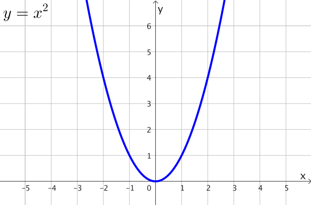
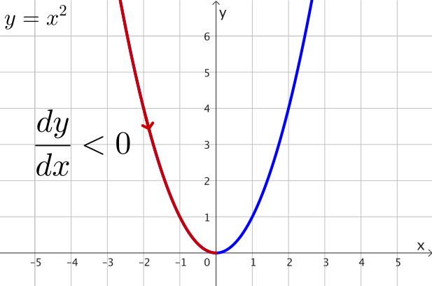
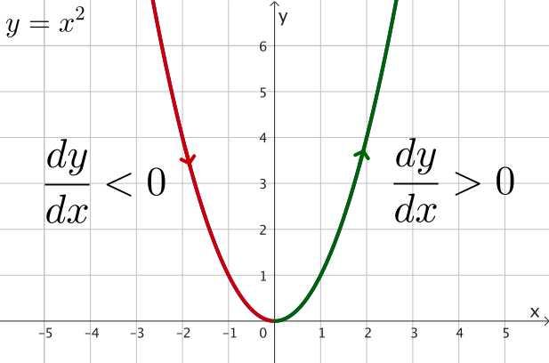
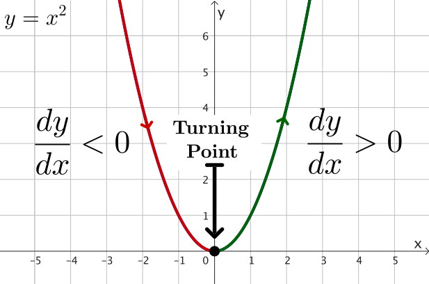
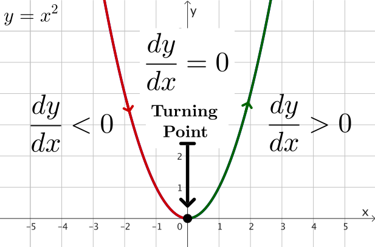
Applications: Turning points
Example 1: Find the turning point of $y = x^2-6x+5.$
$\dfrac{dy}{dx}$ $= 2x^{1}$ $ - \,6x^{1-1}$ $+\, 0$
$=2x-6\quad \;$
To find the turning point, let $\dfrac{dy}{dx}=0.$
$2x-6= 0 $ $\;\Ra\; 2x - 6 + 6 = 0+ 6$
$\;\Ra\; \dfrac{2x}{2} = \dfrac{6}{2}$ $\; \Ra \; x=3$
Applications: Turning points
Example 1: Find the turning point of $y = x^2-6x+5.$
When $\dfrac{dy}{dx}=0,$ we found that $x=3.$
Now, for $\,x=3\,$ we have $\,y = (3)^2- 6(3)+5$
$y= 9-18+5$ $=-4\qquad $
Therefore, the turning point is at $\,x=3,\,$ $y = -4$
Applications: Turning points
Example 1: Find the turning point of $y = x^2-6x+5.$
Turning Point: $\,x=3,\,$ $y = -4$
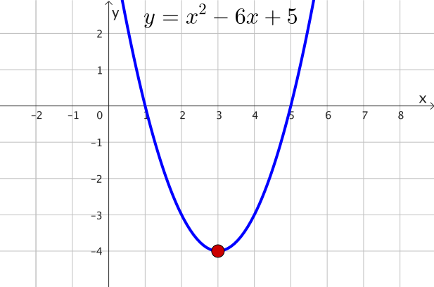
Applications: Turning points
Example 2: Find the turning point(s) of $y = 2x^3+3x^2-12x.$
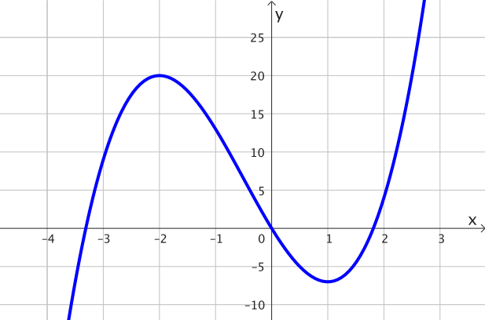
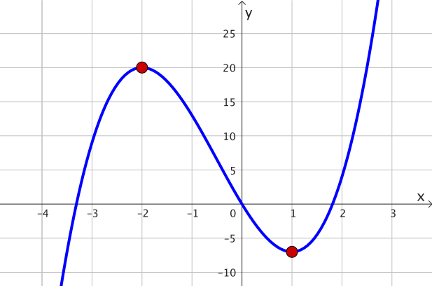
Applications: Turning points
Example 2: Find the turning point(s) of $y = 2x^3+3x^2-12x.$
$\dfrac{dy}{dx}$ $=6x^2+6x-12$
Let $\dfrac{dy}{dx} = 0.$ So we have $6x^2+6x-12 = 0$
$6(x^2+x-2) = 0$
$6(x+2)(x-1) = 0$
So we obtain $x=-2,$ and $x=1.$
Applications: Turning points
Example 2: Find the turning point(s) of $y = 2x^3+3x^2-12x.$
So we obtain $x=-2,$ and $x=1.$
When $x=-2,$ $\,y = 2(-2)^3+3(-2)^2-12(-2)$ $ = 20$
When $x=1,$ $\,y = 2(1)^3+3(1)^2-12(1)$ $ =-7$
Therefore, the two turning points are:
T1: $\;x=-2,\,$ $y = 20$
T2: $\;x=1,\,$ $y = -7\;\;$
Applications: Greatest & Least value
Consider a continuous function $f(x)$ defined on $a\leq x \leq b.$
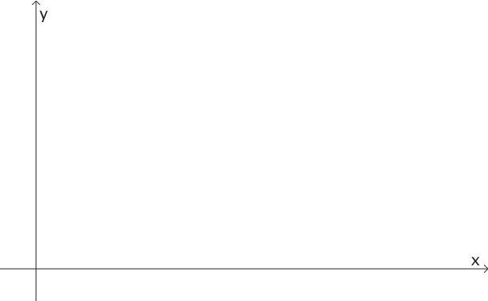
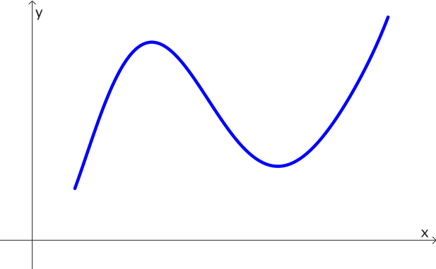
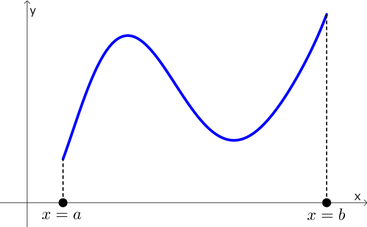
Applications: Greatest & Least value
Consider a continuous function $f(x)$ defined on $a\leq x \leq b.$
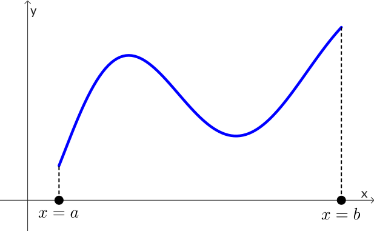
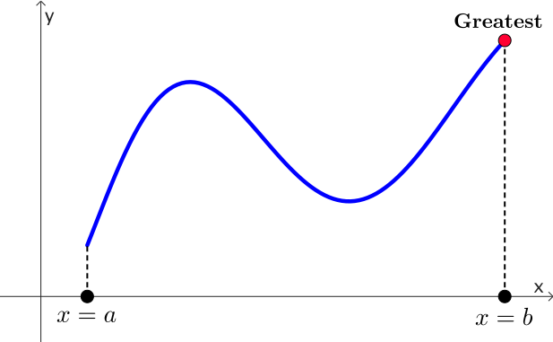
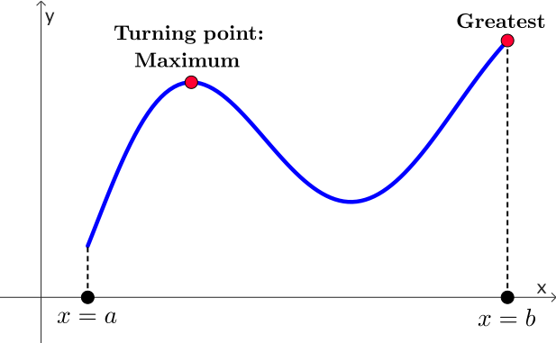
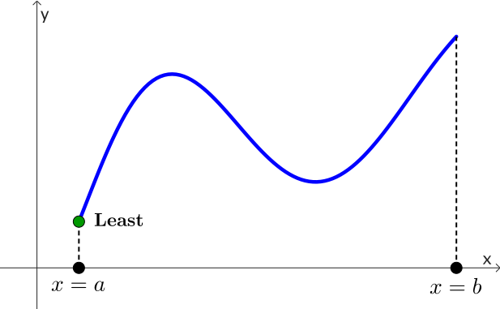
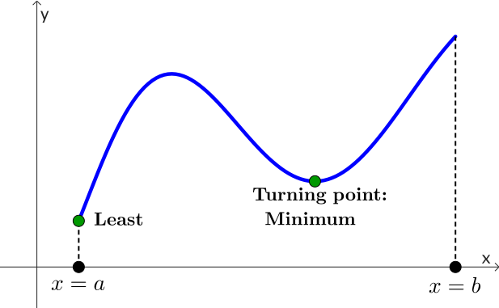
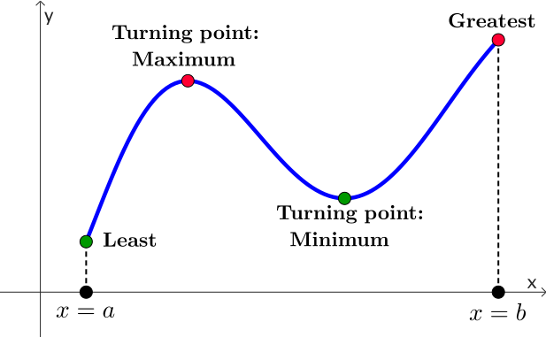
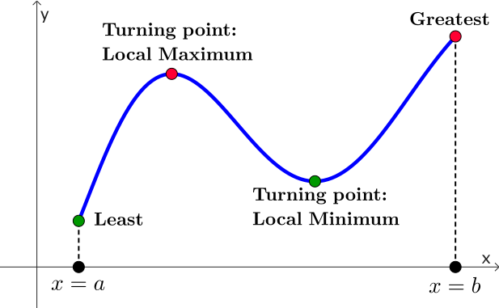
Applications: Greatest & Least value
Consider a continuous function $f(x)$ defined on $a\leq x \leq b.$
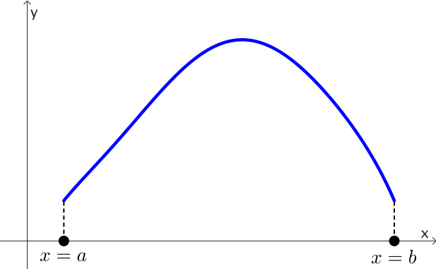
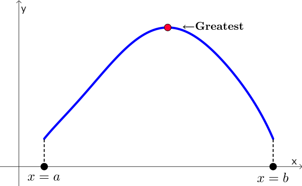
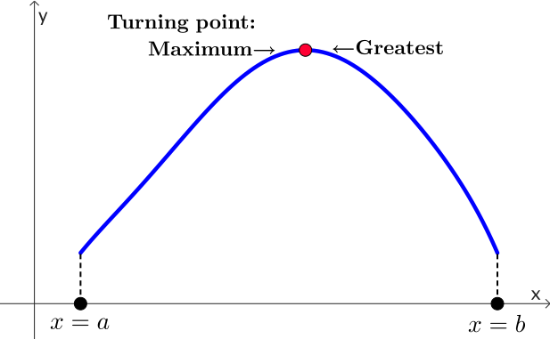
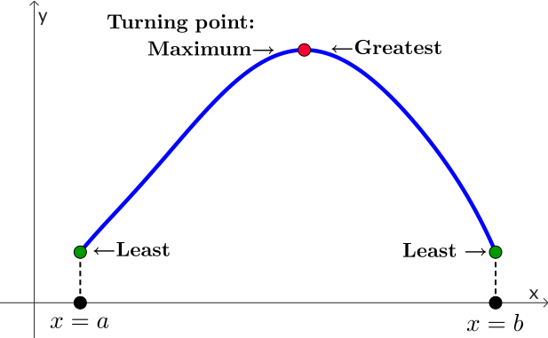
Applications: Greatest & Least value
Consider a continuous function $f(x)$ defined on $a\leq x \leq b.$
The greatest and least values of $f(x)$ will occur:
1. at a turning point ✅
2. at end points of the domain $(x=a,\; x=b)$ ✅
3. where the derivative is not defined (advanced)
3. where the derivative is not defined (advanced)
Example
Find the greatest and least values of the function $y = x^2 - 6x +4$ where $0\leq x\leq 10.$
We start by finding turning point(s).
So, first compute $\dfrac{dy}{dx}$ $= 2x-6.$
To find turning point, let $\dfrac{dy}{dx}=0.$
$2x-6=0$ $\;\Ra \; x = 3.$
Example
Greates & Least values: $y = x^2 - 6x +4\;$ on $\;0\leq x\leq 10.$
👉 $x = 3$
We must check also end values at $x=0$ and $x=10$
For $x=0,$ $\;y = (0)^2-6(0)+4$ $\; = 4$
For $x=3,$ $\;y = (3)^2-6(3)+4$ $\; = -5$ $\;$ 👈 Least
For $x=10,$ $\;y = (10)^2-6(10)+4$ $\; = 44$ $\;$ 👈 Greatest
Example
Greates & Least values: $y = x^2 - 6x +4\;$ on $\;0\leq x\leq 10.$
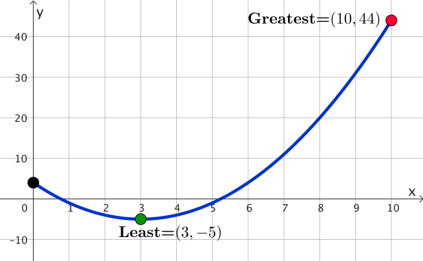
Applications: Tangent Line
|
|
Slope of the tangent line at $P$ $\dfrac{dy}{dx}$ |
Applications: Tangent Line
Find the equation of the tangent line to the function
$y= x^2 -5x\,$ at $\,x=3.$
When $x=3,$ $\;y = (3)^2-5(3)$ $=-6$ $\;\Ra\; P =(3, -6)$
Now, $\dfrac{dy}{dx}$ $\; = 2x-5.\;$ At $x=3,$ we have
$\dfrac{dy}{dx} = 2(3)-5$ $= 1$ $\;\;\Ra\;\; \text{Slope}=m =1$
Applications: Tangent Line
Find the equation of the tangent line to the function
$y= x^2 -5x\,$ at $\,x=3.$
👉 $P =(3, -6)\;\;$ and $\;\;\text{Slope}=m =1$
👉 $y-y_1 = m(x-x_1)$
$\Ra\; y-(-6) = (1)(x-(3))$
$\Ra\; y+6 = x-3$
$\Ra\; y= x-9$
Applications: Tangent Line
Find the equation of the tangent line to the function
$y= x^2 -5x\,$ at $\,x=3.$
👉 $P =(3, -6)\;\;$ and $\;\; y= x-9$
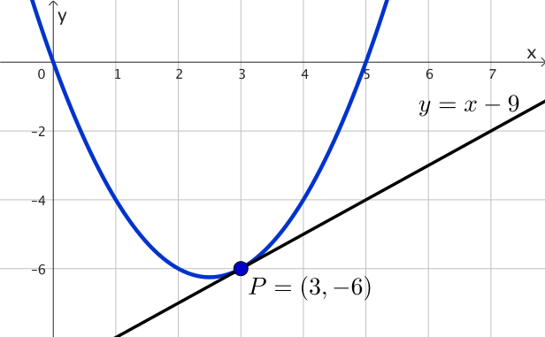
Real-world Applications of the Derivative
Derivative
Instantaneous Rate of Change
Slope of tangent line to a curve
Real-world Applications of the Derivative
Rate of change: We can compute the velocity of objects, that is, the derivative of position with respect to time.

|
Real-world Applications of the Derivative
Optimization: Algorithms in Machine Learning use derivatives (gradient descent), which show the direction and rate of chance of a loss function.
Real-world Applications of the Derivative
Fluid dynamics: Navier-Stokes equations (imcompressible)
Fluid simulation by Amanda Ghassaei 🔄 (Reset/Re-start)